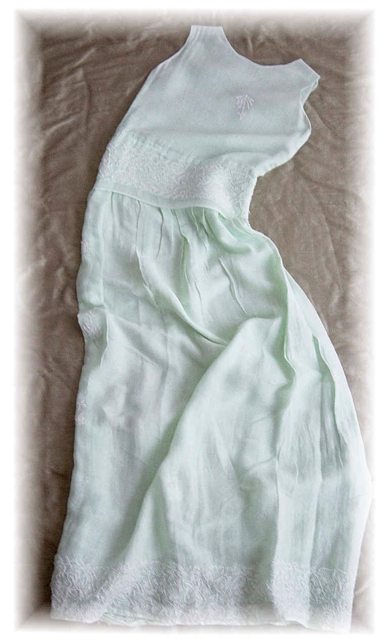

Embroidered Cotton Voile Dress
- Description: The Embroidered Cotton Voile Dress is a soft delicate graceful floor length dress. It has dense embroidery detail on peplum and hem and scattered embroidered floral motifs across bodice and skirt.
- Fabric: 100% Cotton Voile
- Care: Machine wash cold, hang to dry, iron if needed.
- Price (USD): $373
previous dress
back to dresses